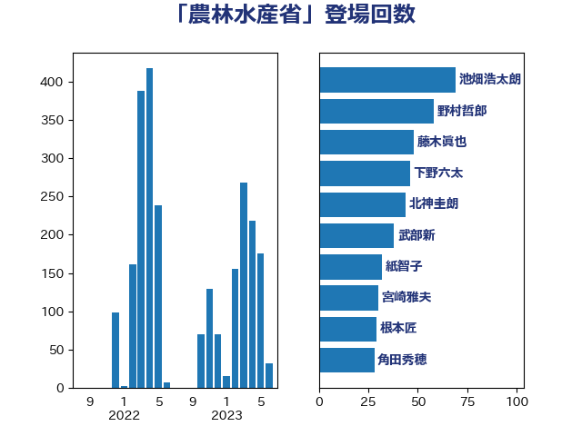

単語「農林水産省」

| 池畑浩太朗 | 日本維新の会 | 69 回 |
| 野村哲郎 | 自由民主党 | 58 回 |
| 藤木眞也 | 自由民主党 | 48 回 |
| 下野六太 | 公明党 | 46 回 |
| 北神圭朗 | 無所属 | 44 回 |
| 武部新 | 自由民主党 | 38 回 |
| 紙智子 | 日本共産党 | 32 回 |
| 宮崎雅夫 | 自由民主党 | 30 回 |
| 根本匠 | 自由民主党 | 29 回 |
| 角田秀穂 | 公明党 | 28 回 |
| 長友慎治 | 国民民主党 | 26 回 |
| 斉藤鉄夫 | 公明党 | 25 回 |
| 徳永エリ | 立憲民主党 | 25 回 |
| 篠原孝 | 立憲民主党 | 23 回 |
| 中村裕之 | 自由民主党 | 22 回 |
| 田名部匡代 | 立憲民主党 | 21 回 |
| 勝俣孝明 | 自由民主党 | 20 回 |
| 舟山康江 | 国民民主党 | 19 回 |
| 田村貴昭 | 日本共産党 | 17 回 |
| 梅村みずほ | 日本維新の会 | 17 回 |
| 加藤明良 | 自由民主党 | 16 回 |
| 岡田直樹 | 自由民主党 | 15 回 |
| 鈴木俊一 | 自由民主党 | 14 回 |
| 近藤和也 | 立憲民主党 | 14 回 |
| 笹川博義 | 自由民主党 | 14 回 |
| 金城泰邦 | 公明党 | 13 回 |
| 進藤金日子 | 自由民主党 | 13 回 |
| 西野太亮 | 自由民主党 | 13 回 |
| 平口洋 | 自由民主党 | 13 回 |
| 緒方林太郎 | 無所属 | 12 回 |
| 神田潤一 | 自由民主党 | 12 回 |
| 石垣のりこ | 立憲民主党 | 12 回 |
| 橋本岳 | 自由民主党 | 11 回 |
| 梅谷守 | 立憲民主党 | 11 回 |
| 川田龍平 | 立憲民主党 | 11 回 |
| 山田俊男 | 自由民主党 | 11 回 |
| 山口壯 | 自由民主党 | 10 回 |
| 堀井学 | 自由民主党 | 10 回 |
| 須藤元気 | 無所属 | 9 回 |
| 若宮健嗣 | 自由民主党 | 9 回 |
| 神谷裕 | 立憲民主党 | 9 回 |
| 長谷川岳 | 自由民主党 | 8 回 |
| 西銘恒三郎 | 自由民主党 | 8 回 |
| 田村まみ | 国民民主党 | 8 回 |
| 松野博一 | 自由民主党 | 8 回 |
| 加藤竜祥 | 自由民主党 | 8 回 |
| 上田英俊 | 自由民主党 | 8 回 |
| 鷲尾英一郎 | 自由民主党 | 7 回 |
| 金子恵美 | 立憲民主党 | 7 回 |
| 横沢高徳 | 立憲民主党 | 7 回 |
| 岸田文雄 | 自由民主党 | 7 回 |
| 岬麻紀 | 日本維新の会 | 7 回 |
| 山口晋 | 自由民主党 | 7 回 |
| 住吉寛紀 | 日本維新の会 | 7 回 |
| 道下大樹 | 立憲民主党 | 6 回 |
| 芳賀道也 | 国民民主党 | 6 回 |
| 福重隆浩 | 公明党 | 6 回 |
| 江藤拓 | 自由民主党 | 6 回 |
| 星野剛士 | 自由民主党 | 6 回 |
| 市村浩一郎 | 日本維新の会 | 6 回 |
| 小野田紀美 | 自由民主党 | 6 回 |
| 大野敬太郎 | 自由民主党 | 6 回 |
| 佐藤信秋 | 自由民主党 | 6 回 |
| 仁木博文 | 無所属 | 6 回 |
| 酒井庸行 | 自由民主党 | 5 回 |
| 菅直人 | 立憲民主党 | 5 回 |
| 竹内譲 | 公明党 | 5 回 |
| 渡辺創 | 立憲民主党 | 5 回 |
| 庄子賢一 | 公明党 | 5 回 |
| 島村大 | 自由民主党 | 5 回 |
| 山下雄平 | 自由民主党 | 5 回 |
| 吉田とも代 | 日本維新の会 | 5 回 |
| 加藤勝信 | 自由民主党 | 5 回 |
| 伊藤忠彦 | 自由民主党 | 5 回 |
| 中川郁子 | 自由民主党 | 5 回 |
| 上田勇 | 公明党 | 5 回 |
| 三上えり | 立憲民主党 | 5 回 |
| 三ッ林裕巳 | 自由民主党 | 5 回 |
| 赤羽一嘉 | 公明党 | 4 回 |
| 谷合正明 | 公明党 | 4 回 |
| 西村明宏 | 自由民主党 | 4 回 |
| 萩生田光一 | 自由民主党 | 4 回 |
| 稲田朋美 | 自由民主党 | 4 回 |
| 石井苗子 | 日本維新の会 | 4 回 |
| 斎藤アレックス | 国民民主党 | 4 回 |
| 掘井健智 | 日本維新の会 | 4 回 |
| 山田勝彦 | 立憲民主党 | 4 回 |
| 大島敦 | 立憲民主党 | 4 回 |
| 堤かなめ | 立憲民主党 | 4 回 |
| 五十嵐清 | 自由民主党 | 4 回 |
| 黄川田仁志 | 自由民主党 | 3 回 |
| 関芳弘 | 自由民主党 | 3 回 |
| 足立康史 | 日本維新の会 | 3 回 |
| 谷公一 | 自由民主党 | 3 回 |
| 西岡秀子 | 国民民主党 | 3 回 |
| 竹内真二 | 公明党 | 3 回 |
| 空本誠喜 | 日本維新の会 | 3 回 |
| 石田真敏 | 自由民主党 | 3 回 |
| 猪瀬直樹 | 日本維新の会 | 3 回 |
| 林芳正 | 自由民主党 | 3 回 |
| 松木けんこう | 立憲民主党 | 3 回 |
| 末松信介 | 自由民主党 | 3 回 |
| 小沼巧 | 立憲民主党 | 3 回 |
| 小宮山泰子 | 立憲民主党 | 3 回 |
| 宮下一郎 | 自由民主党 | 3 回 |
| 塚田一郎 | 自由民主党 | 3 回 |
| 城内実 | 自由民主党 | 3 回 |
| 和田義明 | 自由民主党 | 3 回 |
| 吉田宣弘 | 公明党 | 3 回 |
| 古賀篤 | 自由民主党 | 3 回 |
| 古屋範子 | 公明党 | 3 回 |
| 佐藤正久 | 自由民主党 | 3 回 |
| おおつき紅葉 | 立憲民主党 | 3 回 |
| 長島昭久 | 自由民主党 | 2 回 |
| 野田国義 | 立憲民主党 | 2 回 |
| 野中厚 | 自由民主党 | 2 回 |
| 藤岡隆雄 | 立憲民主党 | 2 回 |
| 蓮舫 | 立憲民主党 | 2 回 |
| 葉梨康弘 | 自由民主党 | 2 回 |
| 若林健太 | 自由民主党 | 2 回 |
| 竹詰仁 | 国民民主党 | 2 回 |
| 稲津久 | 公明党 | 2 回 |
| 福島伸享 | 無所属 | 2 回 |
| 石川昭政 | 自由民主党 | 2 回 |
| 田中健 | 国民民主党 | 2 回 |
| 渡辺博道 | 自由民主党 | 2 回 |
| 河野太郎 | 自由民主党 | 2 回 |
| 江田憲司 | 立憲民主党 | 2 回 |
| 松村祥史 | 自由民主党 | 2 回 |
| 松本剛明 | 自由民主党 | 2 回 |
| 松原仁 | 立憲民主党 | 2 回 |
| 木村次郎 | 自由民主党 | 2 回 |
| 木原稔 | 自由民主党 | 2 回 |
| 平沼正二郎 | 自由民主党 | 2 回 |
| 山岡達丸 | 立憲民主党 | 2 回 |
| 小林鷹之 | 自由民主党 | 2 回 |
| 天畠大輔 | れいわ新選組 | 2 回 |
| 國場幸之助 | 自由民主党 | 2 回 |
| 国定勇人 | 自由民主党 | 2 回 |
| 原口一博 | 立憲民主党 | 2 回 |
| 井上貴博 | 自由民主党 | 2 回 |
| 中根一幸 | 自由民主党 | 2 回 |
| 鰐淵洋子 | 公明党 | 1 回 |
| 高木陽介 | 公明党 | 1 回 |
| 阿部知子 | 立憲民主党 | 1 回 |
| 阿部弘樹 | 日本維新の会 | 1 回 |
| 長峯誠 | 自由民主党 | 1 回 |
| 野上浩太郎 | 自由民主党 | 1 回 |
| 遠藤良太 | 日本維新の会 | 1 回 |
| 近藤昭一 | 立憲民主党 | 1 回 |
| 輿水恵一 | 公明党 | 1 回 |
| 越智俊之 | 自由民主党 | 1 回 |
| 赤澤亮正 | 自由民主党 | 1 回 |
| 谷田川元 | 立憲民主党 | 1 回 |
| 西田昭二 | 自由民主党 | 1 回 |
| 西田実仁 | 公明党 | 1 回 |
| 西村康稔 | 自由民主党 | 1 回 |
| 米山隆一 | 立憲民主党 | 1 回 |
| 簗和生 | 自由民主党 | 1 回 |
| 竹谷とし子 | 公明党 | 1 回 |
| 秋葉賢也 | 自由民主党 | 1 回 |
| 石橋通宏 | 立憲民主党 | 1 回 |
| 石井拓 | 自由民主党 | 1 回 |
| 矢倉克夫 | 公明党 | 1 回 |
| 玉木雄一郎 | 国民民主党 | 1 回 |
| 牧島かれん | 自由民主党 | 1 回 |
| 漆間譲司 | 日本維新の会 | 1 回 |
| 滝沢求 | 自由民主党 | 1 回 |
| 渡辺猛之 | 自由民主党 | 1 回 |
| 渡辺孝一 | 自由民主党 | 1 回 |
| 浜野喜史 | 国民民主党 | 1 回 |
| 池下卓 | 日本維新の会 | 1 回 |
| 永岡桂子 | 自由民主党 | 1 回 |
| 榛葉賀津也 | 国民民主党 | 1 回 |
| 柳本顕 | 自由民主党 | 1 回 |
| 柳ヶ瀬裕文 | 日本維新の会 | 1 回 |
| 松島みどり | 自由民主党 | 1 回 |
| 松山政司 | 自由民主党 | 1 回 |
| 本村伸子 | 日本共産党 | 1 回 |
| 後藤茂之 | 自由民主党 | 1 回 |
| 広瀬めぐみ | 自由民主党 | 1 回 |
| 平山佐知子 | 無所属 | 1 回 |
| 岩田和親 | 自由民主党 | 1 回 |
| 山本啓介 | 自由民主党 | 1 回 |
| 山本博司 | 公明党 | 1 回 |
| 山崎誠 | 立憲民主党 | 1 回 |
| 山下貴司 | 自由民主党 | 1 回 |
| 小野泰輔 | 日本維新の会 | 1 回 |
| 小里泰弘 | 自由民主党 | 1 回 |
| 小沢雅仁 | 立憲民主党 | 1 回 |
| 小池晃 | 日本共産党 | 1 回 |
| 小寺裕雄 | 自由民主党 | 1 回 |
| 寺田静 | 無所属 | 1 回 |
| 宮路拓馬 | 自由民主党 | 1 回 |
| 室井邦彦 | 日本維新の会 | 1 回 |
| 奥下剛光 | 日本維新の会 | 1 回 |
| 大岡敏孝 | 自由民主党 | 1 回 |
| 大家敏志 | 自由民主党 | 1 回 |
| 城井崇 | 立憲民主党 | 1 回 |
| 土屋品子 | 自由民主党 | 1 回 |
| 吉田久美子 | 公明党 | 1 回 |
| 古川康 | 自由民主党 | 1 回 |
| 保岡宏武 | 自由民主党 | 1 回 |
| 佐藤公治 | 立憲民主党 | 1 回 |
| 井坂信彦 | 立憲民主党 | 1 回 |
| 中野英幸 | 自由民主党 | 1 回 |
| 中谷真一 | 自由民主党 | 1 回 |
| 中川宏昌 | 公明党 | 1 回 |
| 中山展宏 | 自由民主党 | 1 回 |